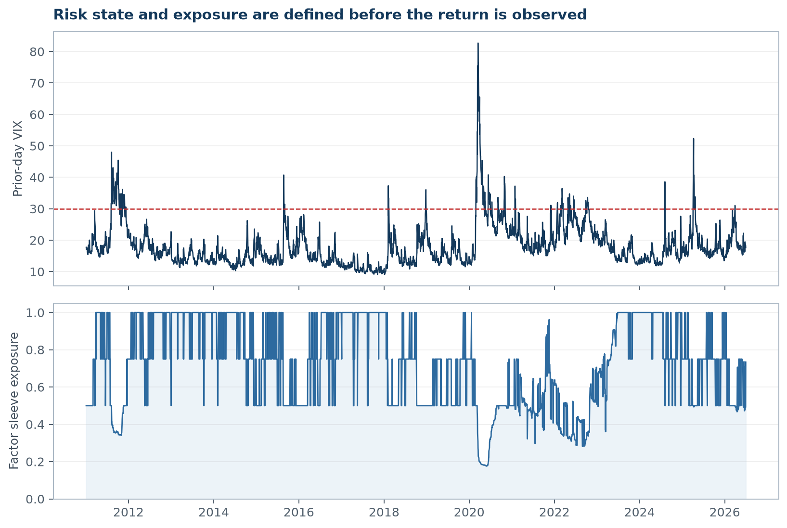
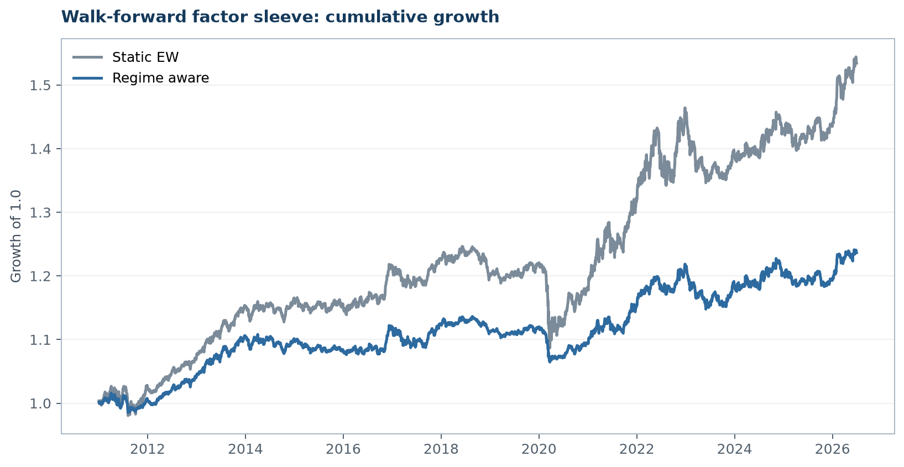

Executive finding
1. Observation → hypothesis
Market stress does more than raise total volatility. Funding constraints, deleveraging, crowded positioning and changes in investor risk tolerance can alter the return distribution of long-short equity factors. The testable hypothesis is therefore:
H1: conditional factor Sharpe ratios differ across volatility states. H2: reducing aggregate factor exposure in high-volatility states can improve drawdown control without using same-day information.
2. Methodology and anti-leakage rules
- Inputs: daily Fama-French five factors plus momentum; Cboe VIX close.
- Ex-ante state: day t uses VIX observed on t-1. Low/Mid/High cutoffs are rolling 33rd/67th percentiles computed over the preceding 756 trading days, with a 252-day warm-up.
- Descriptive test: compare annualized return, volatility and Sharpe by state.
- Uncertainty: estimate 95% intervals for High-minus-Low annualized mean returns with 2,000 moving-block bootstrap draws (20-day blocks).
- Execution rule: start from an equal-weight six-factor sleeve; de-risk toward 5% ex-ante volatility using trailing 63-day data; apply risk budgets of 1.00/0.75/0.50 in Low/Mid/High regimes; never lever above 1.00; charge 2 bp per unit of exposure turnover.
- Validation: report full sample, 2010-2019, 2020-latest and VIX≥30 stress days separately.
3. Factor behavior changes with the volatility state

| Regime | Factor | N | Ann. return | Ann. vol | Sharpe |
|---|---|---|---|---|---|
| Low | Mkt-RF | 1498 | 6.5% | 10.5% | 0.62 |
| Low | SMB | 1498 | -7.5% | 9.0% | -0.83 |
| Low | HML | 1498 | -2.0% | 8.4% | -0.24 |
| Low | RMW | 1498 | 3.3% | 6.0% | 0.55 |
| Low | CMA | 1498 | -5.5% | 5.6% | -0.99 |
| Low | Mom | 1498 | 1.9% | 10.7% | 0.18 |
| Mid | Mkt-RF | 1215 | 12.0% | 13.6% | 0.89 |
| Mid | SMB | 1215 | -2.5% | 9.6% | -0.26 |
| Mid | HML | 1215 | 7.0% | 12.0% | 0.58 |
| Mid | RMW | 1215 | 3.1% | 8.5% | 0.36 |
| Mid | CMA | 1215 | 2.7% | 7.2% | 0.38 |
| Mid | Mom | 1215 | 7.2% | 14.7% | 0.49 |
| High | Mkt-RF | 1182 | 23.1% | 26.4% | 0.88 |
| High | SMB | 1182 | 6.9% | 11.9% | 0.58 |
| High | HML | 1182 | -5.9% | 16.7% | -0.35 |
| High | RMW | 1182 | -3.1% | 9.6% | -0.32 |
| High | CMA | 1182 | 3.0% | 8.1% | 0.37 |
| High | Mom | 1182 | 6.6% | 21.7% | 0.31 |
4. Robustness: the confidence interval matters
The block bootstrap preserves short-run dependence better than resampling individual days. The factors with a high-low return gap that excludes zero are: SMB, CMA. Wide intervals are treated as uncertainty, not as a hidden trading signal.
| Factor | High minus Low ann. return | 95% CI low | 95% CI high | Robust sign |
|---|---|---|---|---|
| Mkt-RF | 16.6% | -5.7% | 38.6% | No |
| SMB | 14.4% | 2.1% | 26.9% | Yes |
| HML | -3.9% | -19.6% | 10.7% | No |
| RMW | -6.4% | -14.5% | 2.6% | No |
| CMA | 8.5% | 0.3% | 16.7% | Yes |
| Mom | 4.7% | -15.0% | 23.6% | No |
5. Walk-forward execution framework


| Window | Strategy | N | Ann. return | Ann. vol | Sharpe | Max drawdown |
|---|---|---|---|---|---|---|
| Full sample | Static EW | 3895 | 2.9% | 4.6% | 0.62 | -12.8% |
| Full sample | Regime aware | 3895 | 1.4% | 2.8% | 0.50 | -6.3% |
| 2010-2019 | Static EW | 2264 | 2.3% | 3.1% | 0.72 | -4.6% |
| 2010-2019 | Regime aware | 2264 | 1.3% | 2.4% | 0.54 | -3.1% |
| 2020-latest | Static EW | 1631 | 3.7% | 6.1% | 0.61 | -11.0% |
| 2020-latest | Regime aware | 1631 | 1.6% | 3.3% | 0.48 | -5.8% |
| VIX >= 30 | Static EW | 233 | 3.5% | 9.4% | 0.37 | -8.3% |
| VIX >= 30 | Regime aware | 233 | 0.2% | 3.3% | 0.08 | -3.2% |
6. Interpretation and decision rules
- Use the regime as a risk control, not a return oracle. Volatility states are more reliable for scaling exposure than for claiming a factor will have a positive return.
- Preserve falsifiability. A factor-state relationship is promoted only when its interval excludes zero and its sign is stable across subperiods.
- Separate research from deployment. A production version would need investable factor portfolios, financing/borrow costs, market impact, capacity and region-specific validation.
- Monitor drift. Re-estimate only on a scheduled cadence and compare new results with the frozen baseline to avoid threshold chasing.
7. Limitations
Reproducibility
Run python src/analyze.py from the project folder. The script reads the raw official-source files, rebuilds the processed dataset, tables, figures and this report. Random resampling uses a fixed seed.
Sources: Kenneth R. French Data Library, “Fama/French 5 Factors (2x3) [Daily]” and “Momentum Factor [Daily]”; Cboe, “VIX Historical Price Data.”